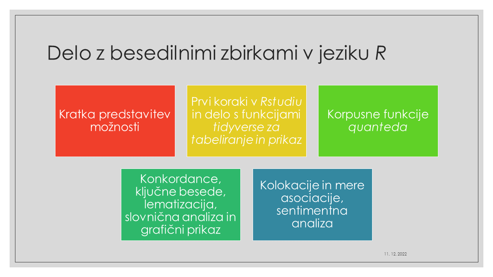
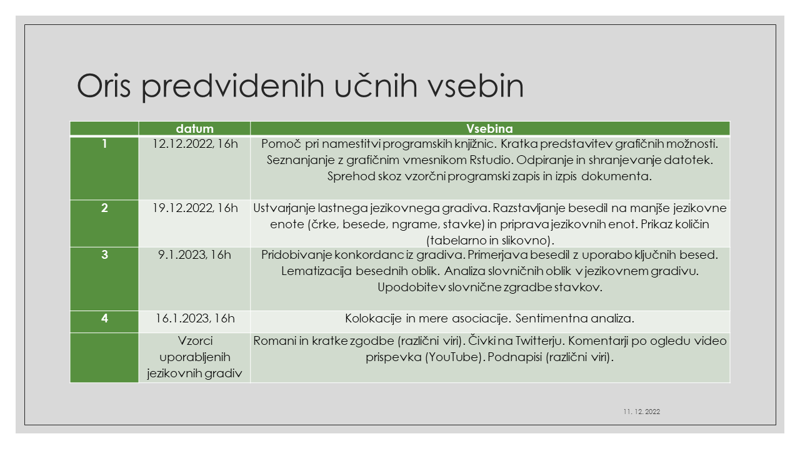

1 Uvod
R je odprtokoden računalniški jezik, znan po številnih statističnih funkcijah in grafičnih zmožnostih, omogoča avtomatizirano obdelavo raznovstnih podatkov (npr. besedil in njihovih sestavnih delov), uporabljamo pa ga lahko tudi za sestavljanje in objavljanje člankov, blogov, prezentacij, spletnih strani in knjig .1
RStudio je brezplačen grafični vmesnik za programiranje v računalniškem jeziku R.

R ima vrsto že vgrajenih knjižnic za statistično analizo, potrebujemo pa še nekaj dodatnih. Naslednji programski odstavek poskrbi za automatizirano namestitev dodatnih knjižnic, ki jih želimo uporabljati za delo z besedili in besedilnimi zbirkami.
Show the code
packages = c("tidyverse", "tidytext", "janitor", "scales",
"widyr", "quanteda", "quanteda.textplots",
"quanteda.textstats", "wordcloud2",
"ggwordcloud", "udpipe", "syuzhet", "ggtext",
"corpustools", "xml2", "XML", "rvest",
"readtext", "readxl", "writexl",
"stopwords", "xmlconvert", "lubridate",
"rtweet", "plotly", "Twitmo",
"jsonlite", "ndjson", "igraph",
"textfeatures") # xlsx
# Install packages not yet installed
installed_packages <- packages %in% rownames(installed.packages())
if (any(installed_packages == FALSE)) {
install.packages(packages[!installed_packages])
}Če bi želeli naložiti vse zgoraj navedene knjižnice v pomnilnik (RAM), bi to lahko naredili z naslednjim ukazom.
Show the code
# Packages loading
invisible(lapply(packages, library, character.only = TRUE))Spletni naslov za namestitev programa R:
https://cloud.r-project.org/bin/windows/base/R-4.2.2-win.exe (Windows)
https://cloud.r-project.org/bin/macosx/big-sur-arm64/base/R-4.2.2-arm64.pkg (MacOS)
https://cloud.r-project.org/bin/linux/ (Linux)
Po namestitvi programa R sledi namestitev urejevalnika RStudio:
https://posit.co/download/rstudio-desktop/ (Windows ali MacOS ali Linux).
V fonolaboratoriju sta R in RStudio že nameščena. Kdor želi, lahko seveda dela s svojim prenosnikom. Prosim, prej namestite R in RStudio.
Za delo je potreben dostop do medmrežja.
Uporabljeni piktogrami2:
To je simbol za opredelitev (rmdnote).
To je simbol za namig ali doatno pojasnilo (rmdtip).
To je navodilo za samostojno nalogo (rmdrobot).
To je logotip grafičnega vmesnika RStudio (rmdrstudio).
To je simbol za svarilo (rmdwarning).
To je logotip za napako pri sestavljanju skripta (rmderror).
Naslednji programski odstavek (program chunk) poskrbi za samodejno dodajanje naslovov v bibliografijo quarto knjige. Tu uporabljamo razširjen format bib.
Knjiga je bila sestavljeno z orodjem
Quartohttps://quarto.org/docs/books/.↩︎Clipart https://www.clipartmax.com/↩︎